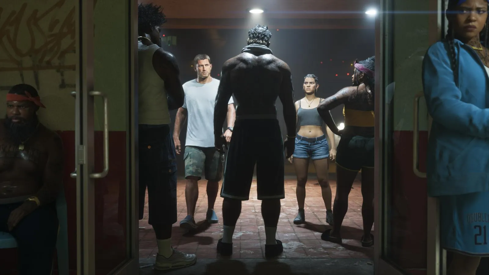

Предзагрузка GTA 6: с 10 ноября, до 212 ГБ — как скачать заранее и сколько места нужно
Опубликовано:

- Предзагрузка открыта с 10 ноября 2026 — для всех, кто оформил цифровой предзаказ.
- Rockstar: нужно до 212 ГБ свободного места. На PS5 загрузка весит около 210 ГБ.
- PS5 — с полуночи по местному времени региона, Xbox — в 00:00 по Гринвичу (03:00 по Москве).
- Скачанная игра не запустится раньше 19 ноября.
- Коробочное издание — это код без диска, в магазинах с 12 ноября.
Когда началась предзагрузка
3 ноября 2026 года Rockstar Games опубликовала в Newswire и в службе поддержки правила предзагрузки Grand Theft Auto VI. Тем, кто оформил цифровой предзаказ, скачать игру можно с 10 ноября — за девять дней до релиза. Изначально предзагрузку обещали 12 ноября, но Rockstar сдвинула её на два дня раньше: игра огромная, и людям с медленным интернетом нужно время.
| PlayStation 5 | Xbox Series X|S | |
|---|---|---|
| Начало предзагрузки | 10 ноября, 00:00 по времени региона магазина | 10 ноября, 00:00 по Гринвичу — одновременно во всём мире (03:00 по Москве; в США — вечер 9 ноября) |
| Запуск игры | 19 ноября, 00:00 по местному времени | 19 ноября, 00:00 по местному времени |
Предзагрузка не даёт поиграть раньше: файлы лежат на консоли зашифрованными и откроются только в момент релиза. Во сколько это будет по Москве для вашего аккаунта — в таблице в статье Дата выхода GTA 6: 19 ноября 2026 — во сколько, на чём и что было до этого.
Сколько весит GTA 6
Rockstar официально пишет: для предзагрузки нужно до 212 ГБ свободного места, точный размер зависит от консоли. Когда загрузка открылась в Новой Зеландии (там полночь наступает раньше всех), аккаунт PlayStation Game Size, который отслеживает размеры игр, показал загрузку на PS5 в 209,8 ГБ. Версия для Xbox, по сообщениям тех же наблюдателей, весит больше — около 225 ГБ; Rockstar отдельную цифру не называла.
Для сравнения: у первой PS5 диск 825 ГБ, но под игры доступно около 667 ГБ — остальное занимает система. Значит, GTA 6 съест почти треть всего места. У PS5 Slim диск 1 ТБ, у PS5 Pro — 2 ТБ, у Xbox Series X — 1 ТБ (около 800 ГБ под игры), у Xbox Series S — 512 ГБ (около 364 ГБ под игры): на Series S после установки GTA 6 останется место от силы на одну-две большие игры.
Как скачать на PS5
- Убедитесь, что предзаказ оформлен в цифровом виде в PlayStation Store на этом аккаунте.
- Откройте «Библиотеку» → «Ваша коллекция» → Grand Theft Auto VI → «Загрузить».
- Чтобы консоль качала сама в режиме покоя: «Настройки» → «Система» → «Энергосбережение» → «Функции в режиме покоя» → включить «Оставаться подключённым к Интернету».
- Если загрузка не начинается — проверьте, что основная консоль для аккаунта — именно эта PS5.
Как скачать на Xbox
- Откройте «Мои игры и приложения» → «Полная библиотека» → «Все принадлежащие игры» → GTA VI → «Установить».
- Включите «Обновлять игры и приложения автоматически» в настройках.
- Код из коробочного издания активируется в Microsoft Store — после этого игра появится в библиотеке.
Если не хватает места
- Удалите старые игры — их всегда можно скачать снова, сохранения хранятся в облаке (при подписке PS Plus / в облаке Xbox).
- На PS5 игру для PS5 можно поставить на внутренний M.2 SSD; на обычный внешний USB-диск игры для PS5 можно только хранить, но не запускать.
- На Xbox Series X|S игры для нового поколения запускаются только с внутреннего диска или фирменной карты расширения Seagate/WD.
- Очистите записи экрана и скриншоты — они быстро занимают десятки гигабайт.
Коробочное издание и бонусы
Физическое издание GTA 6 — это коробка с кодом для загрузки, без диска. Оно поступает в магазины 12 ноября, и предзагрузку по нему можно начать сразу после активации кода. Take-Two на вопрос о дисках 9 ноября ответила, что это решение Rockstar. Подробно об изданиях и ценах — Издания и цены GTA 6: Standard, Ultimate и бонус предзаказа — что входит и стоит ли переплачивать.
19 ноября на официальном сайте GTA VI бесплатно можно будет скачать печатный постер с обложкой и карту Леониды. Физический двусторонний постер Rockstar обещает в своём магазине вскоре после релиза.
Почему игра такая большая
Мир GTA 6 — штат Леонида с Вайс-Сити, болотами Grassrivers, островами Leonida Keys, Mount Kalaga и ещё двумя регионами (все регионы Леониды). По словам Rockstar, интерьеров в игре «на порядок больше», чем раньше, у прохожих разные тела и одежда, в игре 170+ видов животных, а машины, вывески и мусор на улицах сделаны с огромной детализацией. Всё это — текстуры высокого разрешения, анимации и звук. По данным игровых сайтов, без сжатия, над которым работала Rockstar, игра весила бы ещё больше.
- GTA 5 в 2013 году продавалась на двух DVD-дисках для Xbox 360 — 2 × ~8 ГБ.
- Предзагрузка на Xbox стартовала в один момент по всему миру, а на PS5 — волнами: от Новой Зеландии до Мексики.
- В первые часы предзагрузки в соцсетях разошлась запись музыки с экрана GTA 6 в меню PS5.
- Предзагрузка — не гарантия, что качать больше не придётся: патч первого дня, если он будет, скачается отдельно.
Частые вопросы
Когда начинается предзагрузка GTA 6?
10 ноября 2026: на PS5 — в полночь по времени региона, на Xbox — в 03:00 по Москве.
Сколько весит GTA 6?
До 212 ГБ по данным Rockstar; на PS5 загрузка — около 210 ГБ.
Можно ли играть после предзагрузки?
Нет, игра откроется только 19 ноября в полночь по местному времени.
Есть ли в коробке диск?
Нет, в коробке код для загрузки.
Влезет ли GTA 6 на Xbox Series S?
Да, но из ~364 ГБ свободного места игра займёт больше половины.
Источники: Rockstar Newswire и Rockstar Support, 03.11.2026 — даты и размер предзагрузки; PlayStation Game Size (X), 09–10.11.2026 — 209,8 ГБ на PS5 (по сообщениям GTABoom, Keymap); Variety, 09.11.2026 — слова Ш. Зелника о дисках; TechRadar и GameSpot, 11.2020 — 667,2 ГБ доступно на PS5; Microsoft — доступное место на Xbox Series X|S.
Каждый день — одно сравнение: кадр игры рядом с реальным фото. Подписывайтесь:
YouTubeInstagramTikTok- Дата выхода GTA 6: 19 ноября 2026 — во сколько, на чём и что было до этого
- Издания и цены GTA 6: Standard, Ultimate и бонус предзаказа — что входит и стоит ли переплачивать
- GTA 6 перед выходом: всё, что известно за неделю до релиза
- Коллекционный набор GTA 6 The Goodtime State – Vice City Collection: что внутри за $399,99